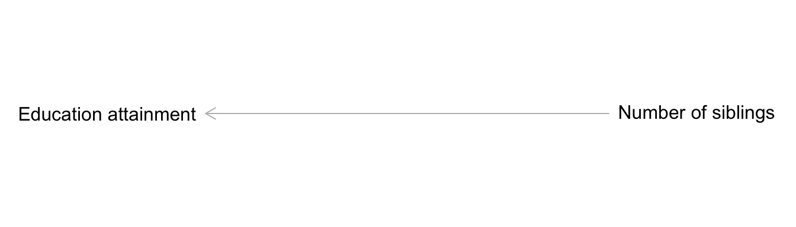
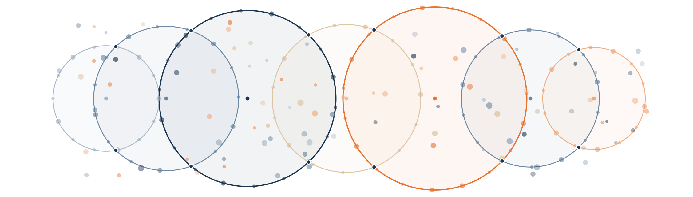
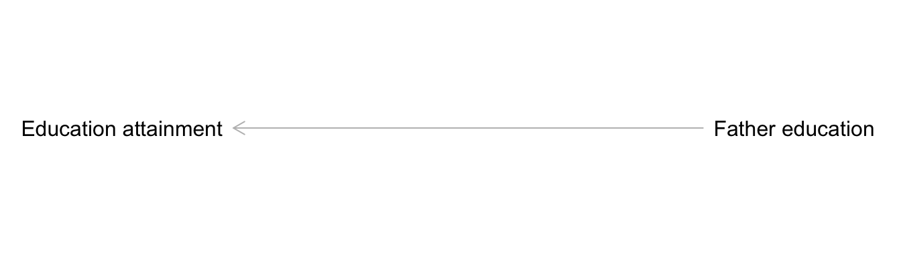
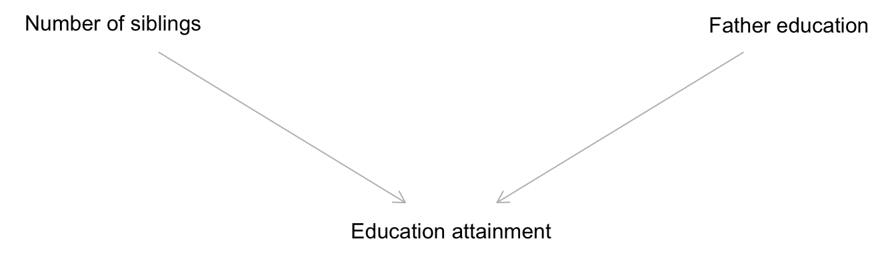
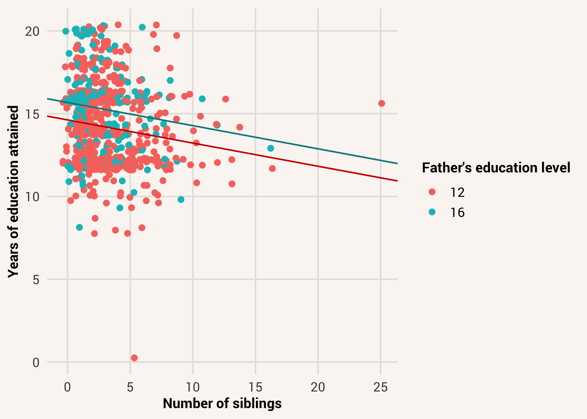

12 Making a Model More Detailed

You have now learned to build statistical models with an explanatory variable and interpret what the values in the model mean. We saw how writing down our ideas of a data generation process that includes an explanatory variable can reduce uncertainty in what values a target variable will have, helping us with prediction goals and with answers about what can explain the target variable.
But we weren’t able to explain away all the variance in the target variable - there is still a lot of unaccounted for variation in the models we’ve worked with so far. Our predictions have been wrong, perhaps by an unacceptable amount depending on our goals. So if taking one explanatory variable into account helps a statistical model, it stands to reason that considering multiple explanatory variables at once can help us further. After all, most real world processes aren’t so simple that they are created or influenced by only one input. So let’s see how we can build more complex models with multiple variables. These are called multivariable models or multiple regression.
multivariable model = a statistical model that includes more than one explanatory variable.
12.1 The case for multiple predictors
Yet again going back to our research question about education attainment:
We previously defined and fit a simple statistical model of this data generation process with a general linear form and normal observation model family:
Assuming the data generation process takes this form \(Y_i \sim \mathcal{N}(\mu_i, \sigma)\) and \(\mu_i = \beta_0 + \beta_1 X_{i}\), we found the best-fitting coefficient values for \(\beta_0\) and \(\beta_1\) - i.e., the best-fitting line through the data that minimized the sum of squared prediction errors. We also found a non-zero residual standard error / \(\sigma\) value, meaning there is still uncertainty in what the target education value for a person will be after taking into account their number of siblings. However, the uncertainty in this model is improved relative to the null model that didn’t taking into account any explanatory variables, as indicated by the \(R^2\) value. Can you remember how to find all that information in the model summary output? Refer back the Chapter 10 and Chapter 11 for a reminder.
This all seems like our theory about parental investment and education outcomes holds some water - assuming the form and family of the model we specified, number of siblings explains some of the variance in people’s education levels and more siblings corresponds with lower education on average.
However, what if your colleague across the hall has a competing theory, that cultural values placed on education are transmitted through families? While you were doing your research with number of siblings, they instead proposed a data generation process where a father’s education level linearly influences how much education their child will get on average.

TipExercise
Fit a statistical model with lm() that uses highest_year_school_completed_father as the explanatory variable in the formula.
It looks like your colleague’s model also has some interesting results. Here, someone whose father received no education is predicted to leave school after 10.67 years (the estimate for \(\beta_0\)). For every additional year of education their father got, their own education is expected to increase by 0.29 years (the estimate for \(\beta_1\)). Using this model to make predictions would result in education guesses that are wrong by 2.66 years on average (the estimate for RSE), and this is an uncertainty reduction of 17% relative to the null model (the \(R^2\) value).
Is one of you right and the other wrong? Not necessarily. In Chapter 9 we talked about how parsimonious models can be simpler than the real data generation process but still useful for understanding fundamental mechanisms. Is one model then more useful than the other? For an explanation goal, since each of you had a different estimand (the effect of family size vs. the effect of parental education), the models serve different purposes. Both explain how the target data will change and what uncertainty remains under different conditions and focuses, so both might be useful.
For a prediction goal however, one model has less uncertainty than the other and would make more accurate predictions (RSE of 2.87 vs. 2.66). If this is why you’re developing a statistical model, then father_model is better at making predictions than sibling_model.
But before you despair over having a “worse” prediction model than your colleague, neither model is explaining all the variance in education attainment because neither of these explanatory variables is the whole story. It’s possible that a person’s education has multiple explanations, and both number of siblings and father’s education level make contributions. So what if you and your colleague combined forces, and suggested a data generation process with both of these explanatory variables at once?

Here’s a plot to show why this might be a possibility for our data. This scatter plot shows the linear association between highest_year_school_completed_father on the x-axis and highest_year_of_school_completed on the y-axis, with points colored by number_of_brothers_and_sisters.
Notice that the light-colored dots (people with a lot of siblings) are mostly below the line of best fit. This indicates that people with more siblings generally have fewer years of education than father_model predicts. In order to predict them more accurately, after taking into account father education, we should also take into account number of siblings to further adjust our predictions up or down. Even though highest_year_school_completed_father explained more variance in highest_year_of_school_completed than number_of_brothers_and_sisters did in separate models, considering both of their influence at the same time in the same model could reduce target uncertainty even more.
12.2 Specifying a multivariable model
So let’s talk about how we specify a model of a data generation process with multiple explanatory variables. Recall our four components of a data generation process we need to make decisions about:
- What is generated by the process?
- What goes into the process?
- What about the outcome is influenced by the input?
- How does the input exert its influence?
Before, we wrote equations as quantified answers to these questions:
\[Y_i \sim \mathcal{N}(\mu_i, \sigma)\]
\[\mu_i = \beta_0 + \beta_1X_i\]
In particular, focus on components 2 and 4 - what goes into the process and how the input exerts influence. When we’re only considering one explanatory variable, there is only one input \(X\) in the prediction equation. If we want to consider the influence of multiple things at once however, we are talking about 2+ inputs. That means our answer to component 2 of the data generation process needs to list both of these variables (e.g. highest_year_school_completed_father and number_of_brothers_and_sisters). We also need to notate them in ways that make it clear they’re both explanatory variables, but different ones. Typically we use numbers as subscripts to do this - \(X_1\) and \(X_2\).
For how these inputs exert influence, we now need some way of combining them. In the scatter plot above, we said that we wanted to take into account the number of siblings in addition to father’s education - the mean of education attainment changes as a function of father education, and further as a function of number of siblings. This implies we can add on another explanatory variable to the prediction equation:
\[\mu_i = \beta_0 + \beta_1X_{1i} + \beta_2X_{2i}\]
This equation still assumes a linear form, because we are still only adding and multiplying values of \(X\) to generate \(\mu\). But this time, we’ve added another piece of information to consider when predicting the target variable; there is another influence on \(\mu\), separate from the influence of the first explanatory variable.
Notice we’ve only changed our idea of the data generation process with respect to the set of inputs and how they exert influence collectively. We still think the target variable is a probabilistic distribution of education attainment and we still think the inputs influence the mean parameter of that conditional distribution. So we would write our entire idea of the data generation process as:
\[Y_i \sim \mathcal{N}(\mu_i, \sigma)\]
\[\mu_i = \beta_0 + \beta_1X_{1i} + \beta_2X_{2i}\]
12.3 Fitting the multivariable model
We now have four unknown values to estimate: \(\sigma\), \(\beta_0\), and \(\beta_1\) as before, and a new effect of \(X_2\) to consider, \(\beta_2\). To fit this version of the model and get these estimates, we update the formula in the lm() command to include both explanatory variables with a + between them:
As before in our modeling workflow, after specifying and fitting the model, we should check the fit - simulate data with the model to make sure it can plausibly generate data that resemble the real dataset. That means using the prediction equation to create predictions for all observations based on their explanatory values. Since the prediction equation now has two variables in it, we need to use all of that information to generate the parameters used for the simulation.
The fit is not perfect (we’re underestimating how many people reply with 12 or 16, the cut-offs for a high school and college degree respectively), but we’re generating data that has roughly the same center and spread as the real data, so we will proceed for now (if the center and spread had been way off, we should think of different ideas for the prediction equation or observation model).
12.4 Interpreting the multivariable coefficients
After checking model fit, we proceed to looking at what the fitted coefficients of the model mean for the relationship between the explanatory variables and the target variable.
We still have a \(\beta_0\) coefficient estimate, denoted “(Intercept)” in the model output. We also have \(\beta_1\), the effect of highest_year_school_completed_father, and \(\beta_2\), the effect of number_of_brothers_and_sisters. What do these numbers mean?
In the simpler prediction equation we learned previously, we saw that \(\beta_0\) was the y-intercept of the line of best fit and \(\beta_1\) was the slope of that line. What is \(\beta_2\) in this idea?
Well, if plotting \(Y\) and \(X\) at one time makes a 2D plane, plotting \(Y\), \(X_1\) and \(X_2\) together would make a 3D space. The output of a model with two explanatory variables would thus be the best fitting plane through a 3D cloud of data.
But that quickly gets confusing to think about. Generally, it’s better to interpret coefficients in terms of what they predict about the target variable values: when you make a change to the explanatory variable, what changes about the target distribution?
Let’s start with the case of someone with no siblings, whose father received no education. In notation, \(X_1 = 0\) and \(X_2 = 0\). By plugging these values into the prediction equation, we get:
\[\mu_{Y|(X_1=0,X_2=0)} = 11.47 + 0.26*0 + -0.14*0 = 11.47\]
Thus, the meaning of \(\beta_0\) in a multivariable model is the mean of \(Y|X\) when \(X_1 = 0\) and \(X_2 = 0\)1. If we had a prediction goal, this is what our model thinks is the most likely value for someone with no siblings and whose father received no education. This value is 11.47 in our data, meaning we predict someone with no siblings and a father with no education will complete 11.47 years of schooling on average.
Now let’s interpret \(\beta_1\). To do so, let’s keep all the other numbers in the prediction equation the same, but increment \(X_1\) by 1:
\[\mu_{Y|(X_1=1,X_2=0)} = 11.47 + 0.263*1 + -0.145*0 = 11.47 + 0.263 = 11.733\]
This is what we saw before in the simple prediction equation - \(\beta_1\) is the change in \(\mu\) for every one-unit increase in \(X_1\). We can verify this by plugging in multiple options for \(X_1\) and seeing that \(\mu\) changes by a consistent amount every time:
However, notice that we kept \(X_2\) at 0 in these predictions. If we instead used a different value for \(X_2\) in these predictions, such as 7:
\[\mu_{Y|(X_1=1,X_2=7)} = 11.47 + 0.263*1 + -0.145*7 = 11.47 + 0.263 - 1.015 = 10.718\]
We make different predictions for someone with 7 siblings and a father with 0 education - 10.72, instead of the 11.47 we predict for someone with 0 siblings and a father with 0 education.
But the change in \(\mu\) for every one-unit increase in \(X_1\) is still the same:
This is because we held \(X_2\) constant. So the full meaning of \(\beta_1\) in a multivariable model is the change in \(\mu\) for every one-unit increase in \(X_1\), when all other explanatory variables are held constant. The difference between \(\mu\) for \(X_1 = j\) and \(\mu\) for \(X_1 = j + 1\) is always the same, regardless of what the other explanatory variables are. This is like comparing the mean education levels of two people who have the same number of siblings but only differ in what their father’s education level was. In effect, we are fitting a separate line of best fit for each value of \(X_2\) - the slope of those lines is always the same, but the intercepts vary depending on the value of \(X_2\).

Conversely, let’s now generate multiple predictions for different values of \(X_2\), while holding \(X_1\) constant:
This is the meaning of \(\beta_2\) in a multivariable model - the change in \(\mu\) for every one-unit increase in \(X_2\), when all other explanatory variables are held constant. It’s the difference in education attainment for two people who have the same father’s education level but differ by 1 in how many siblings they have2
In statistics we also use the terms partial effect and “over and above” for this interpretation. \(\beta_1\) is the partial effect of \(X_1\) on \(\mu_i\), over and above the effect of \(X_2\). Phrasing the interpretation this way makes clear that \(X_1\) is not the only influence on \(Y\), but we can still interpret how big its individual effect is. Since \(\beta_1\) is 0.26 and \(\beta_2\) is -0.14, we can say that there is a positive effect of father’s education on a person’s education attainment over and above the effect of sibling number, while there is a negative effect of sibling number on education attainment over and above the effect of father’s education.
partial effect = the effect of an explanatory variable on a target variable, when holding the value of other explanatory variables constant.
12.5 Variance explained in the model
The concepts we developed for prediction error and uncertainty in simpler models also apply to multivariable models. In all cases, a prediction equation generates a parameter for the observation model of a target; any amount of stuff can go into that prediction equation. We quantify how much variance in the target the input variables can collectively account for by looking at the reduction in spread of \(Y|X\) vs. \(Y\), via the model’s \(R^2\) value.
TipExercise
Return just the \(R^2\) value of multi_model.
TipReveal the answer
summary(multi_model)$r.squared
Or for a prediction accuracy estimand, we quantify how accurate our model’s predictions are by finding the RSE of the model residuals, where the \(\hat{Y}\) predictions are created with multiple input variables.
These values represent the model’s performance as a whole - how much variance we can explain, or how accurately we can predict target values, by accounting for both number of siblings and father’s level of education. Notably, these scores suggest this multivariable model explains more variance in the target than either of the single-variable models did.
If accounting for variance or making accurate predictions is our goal, then it is better to use this more detailed model than one with only one predictor.
However, notice something important - the \(R^2\) value of multi_model is not just the sum of the \(R^2\) values of sibling_model and father_model.
Why is this? This phenomenon happens because the explanatory variables highest_year_school_completed_father and number_of_brothers_and_sisters are not only associated with the target variable highest_year_of_school_completed. They are also associated with each other. We can see this in a scatter plot of father’s education and number of siblings:
We can also see this by investigating the correlation between the variables:
According to this, fathers with more education tend to have fewer children.
When two variables are associated with each other, that means one variable provides some information about the value of the other. If highest_year_school_completed_father carries information about number_of_brothers_and_sisters, then that means that part of the explanatory power of number_of_brothers_and_sisters on highest_year_of_school_completed is already accounted for by highest_year_school_completed_father. In other words, there is less utility than you might think by adding number of siblings to a model with father’s education already accounted for. Given that father’s education and sibling number have overlapping information, some of the variance in respondents’ education attainment that sibling number can explain is already explained by father’s education. The two variables don’t explain completely separate amounts of variance in the target variable.
For a more obvious example, imagine looking at children’s reading scores explained by their age in years and age in months. Age in years is wholly determined by age in months (it’s just a mathematical transformation). So if we know the average reading score for children who are 50 months old, taking into account their age in years as well doesn’t change our ideas at all. We already knew the information about age that helps explain variation in reading scores. Conditional on knowing age in months already, we don’t update our guesses about reading scores anymore by also knowing age in years.
So when interpreting the variance attributable to each explanatory variable, we ask: after knowing how much variance \(X_1\) can explain, how much more can \(X_2\) explain when we consider it too? What additional value is there in considering \(X_2\), after I’ve already taken \(X_1\) into account? If \(X_1\) already explains all the variance that \(X_2\) would help with, then there’s no value to adding it to the model. This process, asking about the unique effect of \(X_2\) after considering \(X_1\), is called conditioning on or controlling for \(X_1\).
statistical control = The process of accounting for variance attributable to a variable so that the unique, partial effect of a different variable can be identified.
Let’s look at whether we have a case like this with our data. First, we will compare the variance explained in the simple sibling_model with that explained in the full multi_model. The only difference between these models is that multi_model includes father’s education as another explanatory variable. So, like we compared a model with an explanatory variable to the null model in Chapter 11, we can compare the more complex model (with two input variables) to the simpler model (with one input variable) to see how much additional variance is explained by father’s education, after already taking number of siblings into account. Once we adjust our guesses about education attainment based on information about siblings, should we further adjust our guesses when we also know father’s education level? Is there a unique effect of father education, controlling for number of siblings?
The full model explains 18.63% of the variance in education attainment, while sibling information only explains 6.95%. Thus, father education explains an additional 11.68% of the variance in education attainment when we take it into account as well. We call this difference a change in \(R^2\), notated as \(\Delta R^2\) (“delta R-squared”).
\(\Delta R^2\) = the difference in amount of variation in a target variable explained by different statistical model specifications
Conversely, here’s the comparison of \(R^2\) score between father_model and multi_model:
Now, \(\Delta R^2\) is 0.0158 - number of siblings only explains 1.58% additional variance in education attainment after we already know father’s education. Thus, it doesn’t seem to carry much unique information about education attainment. We already know what changes to expect in education attainment by learning father’s education. Number of siblings is mostly redundant for that information.
When our estimand is how well in general we can explain variation in a target variable, the estimator we can use is \(R^2\). In this case, our estimate of the estimand is 0.186. When our estimand is how much a particular explanatory variable can explain variance, in the context of other explanatory variables, we can use the \(\Delta R^2\) estimator. Our estimate of that for the effect of number of siblings over and above the effect of father education is 0.0158. When we focus on one variable’s effect after accounting for others, we call this conditioning on or controlling for the other variable(s).
12.6 Variables of different data types
12.6.1 Categorical explanatory variables
The multivariate model we built above is constructed with two numeric variables, highest_year_school_completed_father and number_of_brothers_and_sisters. We’ve seen that we can build simple statistical models with either numerical or categorical variables, so long as we dummy code and interpret the coefficients correctly. The same is true for multivariable models.
Let’s say we instead want to predict highest_year_of_school_completed with the variables respondents_sex and born_in_us. These are character data types in the dataset with two levels each. Since we know that lm() automatically dummy codes categorical variables, we can just include them in the formula and interpret the coefficients as we did before.
TipExercise
Fit a multivariable model with lm() that uses respondents_sex and born_in_us as explanatory variables in the formula.
There are again three coefficients in this model - \(\beta_0\) (intercept), \(\beta_1\) (effect of respondent sex), and \(\beta_2\) (effect of US birth origin). You just have to be careful about interpreting the meaning of these coefficients given that you’re now using categorical variables as predictors.
When you include a categorical variable with two levels in a statistical model, R will automatically recode this variable as 0 and 1, and choose one level to be the reference group. The same happens in the multivariable case, for both explanatory variables. You can predict values of highest_year_of_school_completed by plugging either 0 or 1 into the \(X\) values of the predictor equation. Thus the \(\beta_1\) effect is the change in the mean of \(Y|X\) due to the one-unit increase in \(X_1\) (going from the reference group to the non-reference group for \(X_1\)) when holding \(X_2\) constant (staying in the same group on \(X_2\)). In this case, since \(X_1\) is sex and \(\beta_1\) is -0.08, this coefficient tells us that male respondents have 0.08 less years of education on average than female respondents. Likewise, respondents born in the US have 1.21 more years of education on average than those born outside the US, when looking within just one level of sex.
12.6.2 Multi-category explanatory variables
You may have wondered by now why we’ve only worked with categorical predictor variables that have two levels. What happens when you want to use a categorical predictor variable with more than two levels? R automatically dummy codes binary categorical variables into 0 and 1 when using them as explanatory variables in a model, so what does it do with more than two levels?
The answer is that R actually makes this case into a multivariable model - even when the formula we use only specifies one input variable. Let’s see this in action by predicting highest_year_of_school_completed with only the variable race_of_respondent in order to ask if there are differences in this sample’s average education level between different racial groups.
Using table() to see how many levels this variable has:
There are 1692 white participants, 383 black participants, and 269 participants of different racial groups that the survey administrators classified as “Other”. Thus this variable can take on three values - White, Black, or Other.
Now, use lm() to predict highest_year_of_school_completed with race_of_respondent and see what happens:
TipExercise
Fit a general linear model with lm() that uses race_of_respondent as the only explanatory variable in the formula.
There’s only one input variable in the code formula, but we still get three coefficient estimates in the result!
This is because R still wants to stick with dummy-coding categorical variables - giving levels either the value of 0 or 1. This helps the math work out. But in order to use only 0s and 1s for a variable with three levels, it needs to split this information across two different logical variables. This is like when we were calculating variance of a multi-category variable in Chapter 5, we needed to ask successive yes/no questions about every category to dummy code the variable fully. Thus the prediction equation for this model turns into the form:
\[\mu_i = \beta_0 + \beta_1X_{1i} + \beta_2X_{2i}\]
Where \(X_1\) is whether or not someone is in the “Other” race category (1 for yes, 0 for no), and \(X_2\) is whether or not someone is in the “White” race category (1 for yes, 0 for no). “Black” is being used as the reference group for both, since it is first in the alphabet (you can verify this by looking at the names of the coefficients output by the model).
In this case, the meaning of \(\beta_1\) is the change in the mean of \(Y|X\) due to being in the category “Other” compared to the reference group, and \(\beta_2\) is the change in the mean of \(Y|X\) due to being in the category “White” compared to the reference group. \(\beta_0\) is the mean level of education for someone in the category “Black” (since that means \(X_1\) and \(X_2\) are both 0; someone is neither Other nor White, so must be Black in these data).
Again, you don’t need to do the dummy-coding yourself - R will automatically set up the model for you this way when you pass it categorical variables as predictors. Just make sure your explanatory variable types truly are categorical (as the character or factor data type) when you want it to behave this way.
When the model is automatically built out of a multi-category single variable like race_of_respondent, it’s not possible for an observation to have an \(X_1\) of 1 and an \(X_2\) of 1. That would mean they are both “Other” and “White”, and this variable is set up such that someone can only be one category. You could imagine allowing participants to select multiple categories for themselves, in which case you could have a value of 1 on multiple categorical variables. But in this case, that’s not how the data were recorded. Always keep the concrete meaning of the variables in mind when interpreting model results!
12.6.3 Ordinal explanatory variables
We haven’t explicitly talked about ordinal data in a while, but it is a common way of representing variables - Likert scales (e.g, ratings from 1 to 5) are used very frequently in survey methodology. In this very dataset there are multiple instances of ordinal variables.
For the purposes of statistical modeling, they’re a bit of a hybrid between categorical variables and ratio variables. They’re ordered, such that a one-unit increase in this variable means you’re getting “bigger” or “larger” on the variable, like with a ratio variable. But there’s only a few response options, so predicting an outcome value for \(X=4.3\) doesn’t make sense when participants only have the option of responding 1, 2, 3, 4, or 5 (i.e., 4.3 is not a real possible input).
So how should you interpret the value of a coefficient when using an ordinal variable as a predictor? The answer is maybe unsatisfactory, but it depends on how you want to interpret it. In other words, do you care about the effect of having a particular value on the scale? Or do you care about the effect of just moving up on the scale, no matter the specific scale value?
In the first case, modeling it as a categorical variable makes the most sense. Let’s do this in the case of predicting how many hours someone worked last week based on their general happiness levels, and include a boxplot to help with visualizing:
general_happiness has 3 levels, “Very happy”, “Pretty happy”, and “Not too happy”. Thus when modeling it as a categorical variable, there are 3 coefficient estimates - one for the intercept, one for Pretty happy vs. Not too happy, and one for Very happy vs. Not too happy (Not too happy is being used as the reference group).
Each of these coefficients gives you the power to see what is the effect of being in one level of the ordinal variable vs. the reference level. Based on this, it looks like people who are both pretty happy and very happy tend to work more hours than people who are not too happy. However, doing it this way doesn’t preserve any information about the order of the levels. Any of them could be used as a reference group, and it’s hard to figure out if there’s a general trend upward or downward just based on the coefficients. In other words, there’s no statistical comparison between the levels of pretty happy and very happy.
Alternatively, we could recode general_happiness into numeric values and use that as a singular explanatory variable:
Now there are just two coefficients, the intercept \(\beta_0\) d the effect of a one-unit increase of happiness_num, \(\beta_1\). This has the advantage of being a more parsimonious model, and allows you to describe how the conditional mean of \(Y\) changes as you move up the ordinal scale. However, this means the effect in the data generation process is assumed to be the same between each level of the ordinal variable, and enables you to make predictions for values between possible responses (e.g., \(X=1.5\)) which isn’t possible to occur.
There’s also a difference in how well each of these models explains variance in the target variable:
The difference isn’t much (happiness in either form doesn’t seem to explain much variance at all in working hours), but the difference there is implies that thinking about the data generation process as a consistent, monotonic effect of happiness might not be as useful as thinking about “not very happy” as a particularly unique group relative to the others when it comes to working hours.
Whichever method you choose for ordinal predictors should depend on your idea of the data generation process. If you don’t know which one to use, remember - it’s ok to pick one option for a data generation idea and be wrong, but we should commit to something so that the data can tell us when we are wrong!
12.6.4 Mixed explanatory variable types
Due to the flexibility of the general linear model form, it is also possible to combine categorical and continuous variables in one predictor equation. Let’s predict highest_year_of_school_completed with highest_year_school_completed_father and born_in_us:
We still get fitted coefficient estimates, just as we have been doing all throughout this chapter. In this case, remember to interpret them in the context of how their variables were recorded. \(\beta_1\) is the change in mean education years due to a one-unit increase in their father’s education level, over and above the effect of being born in the US. \(\beta_2\) is the change in mean education years due to being born in the US vs. not, over and above the effect of father’s education. \(\beta_0\) is the average education when both \(X_1=0\) (their father had no years of formal education) and \(X_2=0\) (they were not born in the US).
12.7 Other ways to improve a model
We saw in this chapter how to change our statistical model to reflect a new idea of the data generation process - namely, that there are multiple explanatory variables that all influence a target variable. We made this change by adding another \(X\) to the prediction equation, but we kept the same general equation form (linear, additive effects on \(Y\)) and the same observation model (\(Y|X\) is normally distributed). These too are features of the data generation process idea; they are assumptions we encode into the model via the equations we choose. If we had different ideas about these features, we could make further changes to the statistical model equations.
We won’t get into to the details of how to make these changes in this introductory unit. If you want to see a deeper dive, there are more advanced chapters at the end of this book. But to give you a taste of what’s possible to think about, here are some other common ideas of data generation processes that involve specific changes to the statistical model:
- different observation models (?sec-ch21): It’s common to use a normal observation model and assume that target values are symmetrically distributed around a predicted mean. Such an assumption often comes from the idea that the target values are measured with random error, but that the true latent value is the mean. However this isn’t always a good assumption for a data generation process. In particular, it’s not a good assumption if it’s not possible for a variable to be normally distributed due to its scale of measurement. For instance, a binary target variable can only be Bernoulli distributed. In cases like this, we can use different observation models to encode our ideas of how the probabilistic piece of a data generation process works.
- non-linear associations (?sec-ch22): It is also common to use a linear prediction equation. This is because many relationships in real data are weak (or measured with a lot of error), so it’s hard to tell what the form of the association should be. Alternatively, your theories are underdeveloped at this time and you don’t know what form to expect. In such situations, a linear form is a good default because it’s easy to interpret. But again, this might not be appropriate for all cases. You can draw differently-shaped best fitting lines through the data by using different functional forms for the prediction equation3.
- interaction effects (?sec-ch23): In this chapter we saw an example of a data generation process idea where the effect of one explanatory variable was assumed to be consistent regardless of the value of another variable. But you can probably think of situations where this isn’t true. For example, there might be a negative relationship between screen time and mental health, but only among people who use that screen time for scrolling social media instead of other uses. In this case, there would be what’s called an interaction effect between screen time and type of screen use - the value of the effect of screen time depends on the value of the screen use type variable. To encode this in a statistical model, one needs to add terms that make \(\beta_1\) itself a function of another variable.
- multilevel models (?sec-ch24): Speaking of different effects for different situations, not all people respond to stimuli in the same way. A therapy regime may be very effective for some people, somewhat so for others, or possibly even harmful for a few. There could be a distribution of effects across people. To accommodate an idea like this, we can assume each person has their own prediction equation, and the coefficients of the equations are themselves data that can be modeled by another prediction equation at a higher level.
12.8 Chapter summary
12.8.1 Learning goals
After reading this chapter, you should be able to:
- Turn ideas of a multi-input generation process into models with more than one explanatory variable
- Fit a multivariable model in R, with different types of explanatory variables
- Interpret each coefficient in a multivariable model, in the context of the other variables
- Estimate the variance explained by a whole model, or uniquely by a piece of the model
12.8.2 New concepts
- multivariable model: a statistical model that includes more than one explanatory variable.
- partial effect: the effect of an explanatory variable on a target variable, when holding the value of other explanatory variables constant.
- statistical control: the process of accounting for variance attributable to a variable so that the unique, partial effect of a different variable can be identified.
- \(\Delta R^2\): the difference in amount of variation in a target variable explained by different statistical model specifications.
In the \(Y|X\) notation, if we have multiple explanatory variables, \(X\) means the set of all the separate \(X_{1,2,...k}\) variables↩︎
Note that in this interpretation, we expect two people who differ by one siblings to have the same difference in education attainment whether their father has no education, or has a PhD. The effect of siblings is consistent regardless of father’s education level. This is a strong assumption to encode into the model. Maybe you would expect sibling number to have a stronger effect on education attainment among people whose fathers had no education, than among people whose fathers have a higher degree. If so that’s a further model complication called an interaction. Read the advanced chapter ?sec-ch21 for more info.↩︎
and actually there are mathematical tricks you can do to linearize a non-linear relationship, by transforming the units of the explanatory variable.↩︎